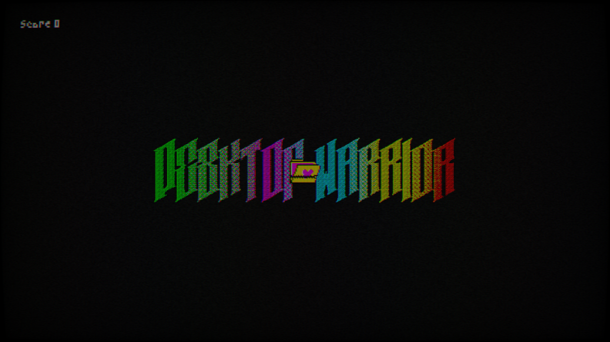

Desktop Warrior
6
Godot
RTS
PC - Web
Programmer/Designer
Technical Prize
2024
Desktop Warrior is a game jam project made in 2 days during the 24th edition of the Creative Jam, presented by NAD School and Polytechnique School in collaboration with Ubisoft. The theme was "Disappearance".
Tasks
- Windows Mechanic
- Enemies' Interactions
- Player Interactions
Windows
- Create windows when dragged, if the boundary is big enough.
- Kill enemies inside the window if close button is pressed.
- Shrink enemies inside the window when the reduce button is pressed.
- Expand the window when the expand button is pressed.
Enemies
"Le Mage"
- Disable the windows in which it is located
- Needs to be crushed to die
"Le Geant"
- Needs to be shrunk down to be killed
"Le Rock"
- Block the window from expanding upon contact
"Le Peon"
- Doesn't do anything in particular
Player
- Can be moved around (Unless Healing)
- Right click to heal (Loading bar)